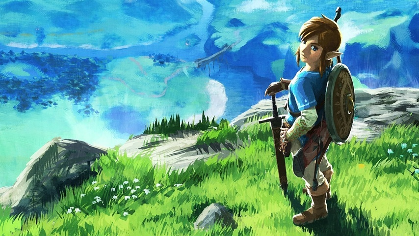
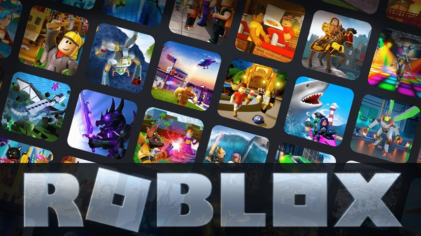
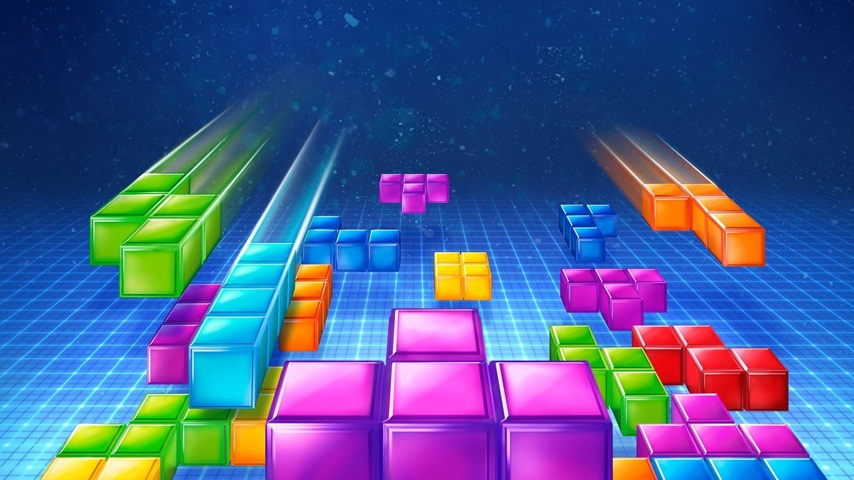

Top 10
Minecraft

Minecraft es un videojuego de construcción y supervivencia en mundo abierto desarrollado por Mojang Studios. Se caracteriza por su estilo visual basado en bloques y por ofrecer un mundo generado de forma procedural donde los jugadores pueden explorar, recolectar recursos, fabricar herramientas y construir prácticamente cualquier estructura que imaginen.
El juego ofrece distintos modos, como supervivencia y creativo, permitiendo tanto la gestión de recursos como la construcción ilimitada. Con el paso del tiempo, se han añadido nuevas criaturas, biomas, dimensiones y sistemas de juego que amplían constantemente la experiencia. Desde su lanzamiento en 2011, se ha convertido en uno de los videojuegos más vendidos e influyentes de la historia.
Grand Theft Auto V

Grand Theft Auto V es un videojuego de acción y mundo abierto desarrollado por Rockstar Games. Se ambienta en la ciudad ficticia de Los Santos y permite al jugador controlar a tres protagonistas distintos, alternando entre ellos a lo largo de la historia.
El juego combina misiones principales, actividades secundarias y un amplio mundo explorable lleno de detalles. Su modo en línea, GTA Online, amplió significativamente su duración y popularidad. Desde su lanzamiento en 2013, se ha mantenido como uno de los títulos más exitosos y vendidos del mercado.
League of Legends

League of Legends es un videojuego competitivo en línea del género MOBA desarrollado por Riot Games. Dos equipos de cinco jugadores se enfrentan con el objetivo de destruir la base enemiga, utilizando campeones con habilidades únicas.
La estrategia, la coordinación y la toma de decisiones son fundamentales en cada partida. Desde su lanzamiento en 2009, se ha convertido en uno de los esports más importantes del mundo, con torneos internacionales y millones de jugadores activos.
Call of Duty
Call of Duty es una saga de videojuegos de disparos en primera persona que abarca múltiples ambientaciones, desde conflictos históricos hasta escenarios futuristas. Cada entrega ofrece modos campaña, multijugador competitivo y, en muchas ocasiones, modo cooperativo o zombis.
Con lanzamientos casi anuales, la franquicia se ha consolidado como una de las más influyentes dentro del género shooter, destacando por su jugabilidad dinámica y su fuerte presencia en el juego en línea.
Fortnite

Fortnite es un videojuego multijugador desarrollado por Epic Games que popularizó el género battle royale. En este modo, cien jugadores compiten en una isla hasta que solo queda uno en pie, combinando disparos con mecánicas de construcción en tiempo real.
El juego destaca por su estilo visual colorido, eventos en vivo y constantes colaboraciones con marcas y franquicias reconocidas. Desde 2017, se ha consolidado como un fenómeno cultural dentro y fuera del mundo del videojuego.
The Legend of Zelda: Breath of the Wild

The Legend of Zelda: Breath of the Wild es un videojuego de acción y aventura desarrollado por Nintendo. Presenta un amplio mundo abierto que permite al jugador explorar libremente, resolver acertijos y enfrentarse a distintos enemigos.
El sistema de físicas, la libertad de exploración y el diseño no lineal lo convirtieron en uno de los títulos más influyentes de su generación desde su lanzamiento en 2017.
Among Us

Among Us es un videojuego multijugador de deducción social desarrollado por InnerSloth. Los jugadores asumen el rol de tripulantes o impostores dentro de una nave espacial, donde deben completar tareas o sabotear la misión sin ser descubiertos.
El diálogo, la estrategia y la capacidad de persuasión son claves en cada partida. Aunque fue lanzado en 2018, alcanzó gran popularidad en 2020, convirtiéndose en un fenómeno global.
Super Mario Bros

Super Mario Bros. es un videojuego de plataformas desarrollado por Nintendo que marcó un antes y un después en la industria. El jugador controla a Mario mientras avanza por distintos niveles llenos de obstáculos y enemigos con el objetivo de rescatar a la princesa.
Su diseño accesible pero desafiante y su icónica música lo convirtieron en uno de los títulos más reconocibles de la historia del videojuego.
Roblox

Roblox es una plataforma de juegos en línea que permite a los usuarios crear y compartir sus propias experiencias interactivas. Ofrece millones de juegos creados por la comunidad, abarcando múltiples géneros y estilos.
Su enfoque social y creativo lo ha convertido en una de las plataformas más populares entre el público joven desde su lanzamiento en 2006.
Tetris

Tetris es un videojuego de puzles creado por el programador ruso Alekséi Pázhitnov. Su mecánica consiste en encajar piezas geométricas que caen desde la parte superior de la pantalla para completar líneas horizontales.
Su simplicidad, accesibilidad y carácter atemporal lo han convertido en uno de los videojuegos más reconocidos y duraderos de todos los tiempos.